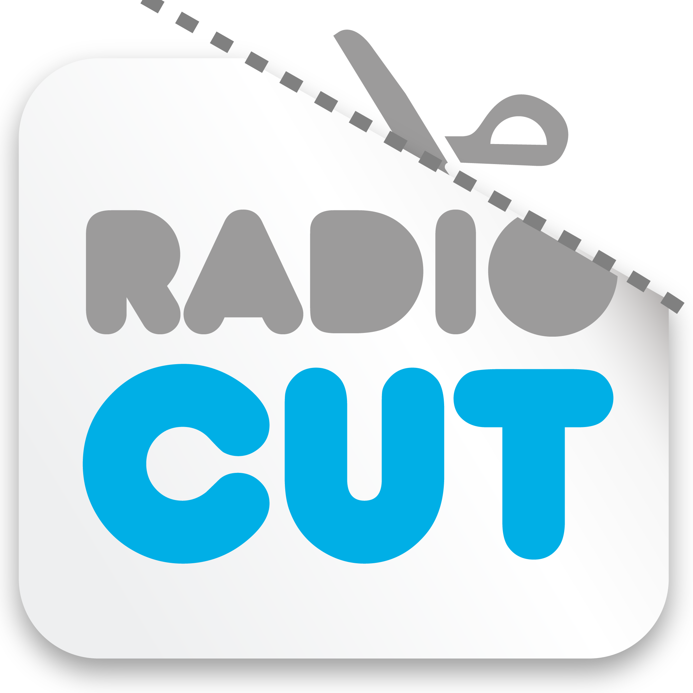
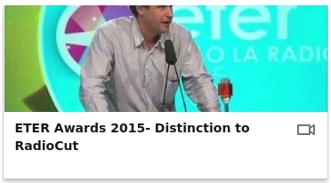
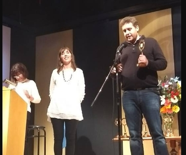

RadioCut is a platform where you can listen to past and current radio shows and cut and share your favorite parts.
The problem of radio today is you cannot access their contents in the same revolutionary way of the other contents in the Internet.
What listeners really want is to share short clips or entire shows, to listen to radio on-demand and to easily discover radio contents.
She worked in IT since 1996, doing every kind of work in the area but what he love is software development.
Comming from the tech side, after 10 years leading my own company, he acquired experience in many management skills: sales, marketing, finance and accounting and almost any imaginable task in a software company.
Working together for more than 14 years. Succesfully founded in 2005 a technology company. Still going strong with 10 employees.
RadioCut understands the huge potential of traditional broadcasting as well as the challenges content producers face to bridge the gap between their content and the full potential of the Internet. Radiocut goes beyond streaming content. It is more than a listening platform. It is a user-classified, centralized, worldwide accessible archive for radio content. It is a new way to access all that content by fully taking advantage of the storage, tagging and sharing capabilities of the Internet.
Launched in Oct 2013 in Argentina, initially as a side-project of the founders. Since then, we had a sustained growth.
RadioCut is owned by RadioCut Inc., a Delaware C Corp, based in Argentina. Recently joined MOX, the leading Asia mobile-only accelerator, which is part of the global VC SOSV.
Premios ETERGrammys for radio in Argentina |
Galardon SusiniBy Argentores for its contributions to spread and preserve radio contents. |
Global Site https://radiocut.fm/all
Twitter @radiocutfm
Facebook /radiocut
Email press @ radiocut.fm
WeChat/Telegram @gnarvaja
Phone / WhatsApp +54 911 67834435
{kind=link}